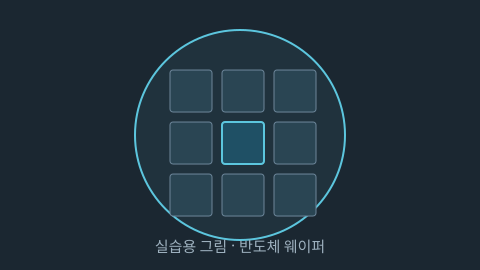

정부가 7일 반도체 산업 지원 방안을 발표했습니다.
업계 관계자는 "시행 시기가 관건"이라고 말했다.
정부가 7일 반도체 산업 지원 방안을 발표했습니다.
업계 관계자는 "시행 시기가 관건"이라고 말했다.
정부가 7일 반도체 산업 지원 방안을 발표했습니다.
업계 관계자는 "시행 시기가 관건"이라고 말했다.


day01 - article.html| 섹션 | 기사 수 |
|---|---|
| 경제 | 88 |
| 섹션 | 기사 수 |
|---|---|
| 경제 | 88 |
| 장르 | 작품 수 | 평균 | 중앙값 |
|---|---|---|---|
| 일상 | 216 | 9.75 | 9.86 |
| 드라마 | 277 | 9.72 | 9.79 |
| 스포츠 | 66 | 9.72 | 9.79 |